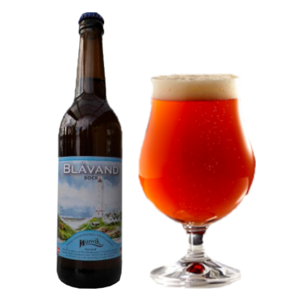

Fredericia Brewpub
Lillebælt Ale
Smag af karamel, tørrede frugter og toffee
Untappd: N/A
Ratebeer: N/A
Smag
Lillebælt ale er en øl med masser af maltsmag. Den har en smag af karamel, tørrede frugter, toffee og et twist af sort sirup.
Fylde
Let
Kraftig
Livlighed
Rolig
Livlig
Bitterhed
Lidt
Meget
Serveringsforslag
 |
|
| Svinekød | Gryderet |
Lillebælt ale kan nydes til en god gryderet eller gamle danske retter, f.eks. stegt flæsk. Den kan også sagtens nydes alene.
| Type: | Old Ale |
| Alkohol pct.: | 5,4% |
| IBU: | 31,1/td> |
| Oprindelse: | Fredericia, Danmark |
| Bryggeri: | Fredericia Brewpub |
| Ingredienser: | Vand, bygmalt, byg, black treacle humle |
Øllets historie
Lillebælt Ale har været et fast inventar hos Bach Bryg gennem mange år. Hvis man er til mørk øl, skal denne bestemt prøves. Nogle vil kalde den en mellemting mellem en brown ale og en engelsk porter. Men Lillebælt Ale er helt sin egen.
Vi har fundet andre øl, du måske vil synes om...

De Molen
Amarillo
Stærke humle smage, med pilsner- og karamel

Warwik bryghus
Mørk 7'er
Mørk øl med sødme og bitterhed.

Warwik Bryghus
Warwik Bryghus
Blåvand
Smag af karamel, krydret eftersmag